Real ads from account 507706187, pulled from LinkedIn (in-platform, all time to Oct 18 2026). Leads = oneClickLeads. CPL = spend ÷ leads. Form CVR = leads ÷ form opens. Totals are sum ÷ sum.
| Offer | Ads | Leads | CPL | Form CVR |
|---|---|---|---|---|
| Project eBook: Increase your ROI (2022 + 2023 editions) | 16 | 4,834 | $100 | 14% |
| PMO eBook: The manager's guide to executing successful projects in 2024 | 8 | 2,384 | $136 | 16% |
| Marketing eBook: Build a content team that does more than just write | 6 | 909 | $63 | 25% |
| InMail eBook offers (PMO + Marketing, 2022) | 6 | 821 | $51 | 39% |
| WM eBook: The ultimate guide to managing work (incl. enterprise edition) | 8 | 589 | $223 | 7% |
| Project eBook: Manage projects better with one source of truth | 4 | 561 | $125 | 11% |
| Creative eBooks: Streamline your creative process / Creativity that converts (2022) | 5 | 470 | $150 | 10% |
| Marketing eBook: The 8 marketing metrics to track in 2023 | 4 | 326 | $60 | 26% |
| Video series: The Bottom Line (marketing leaders) | 1 | 314 | $215 | 12% |
| PMO eBook: Power up your people skills (emotional intelligence) | 1 | 291 | $191 | 14% |
Roll-up covers the top 90 lead-gen creatives by leads (24,224 leads across 1,835 creatives with leads all time). Same offer = same headline/eBook across geos, images and years.
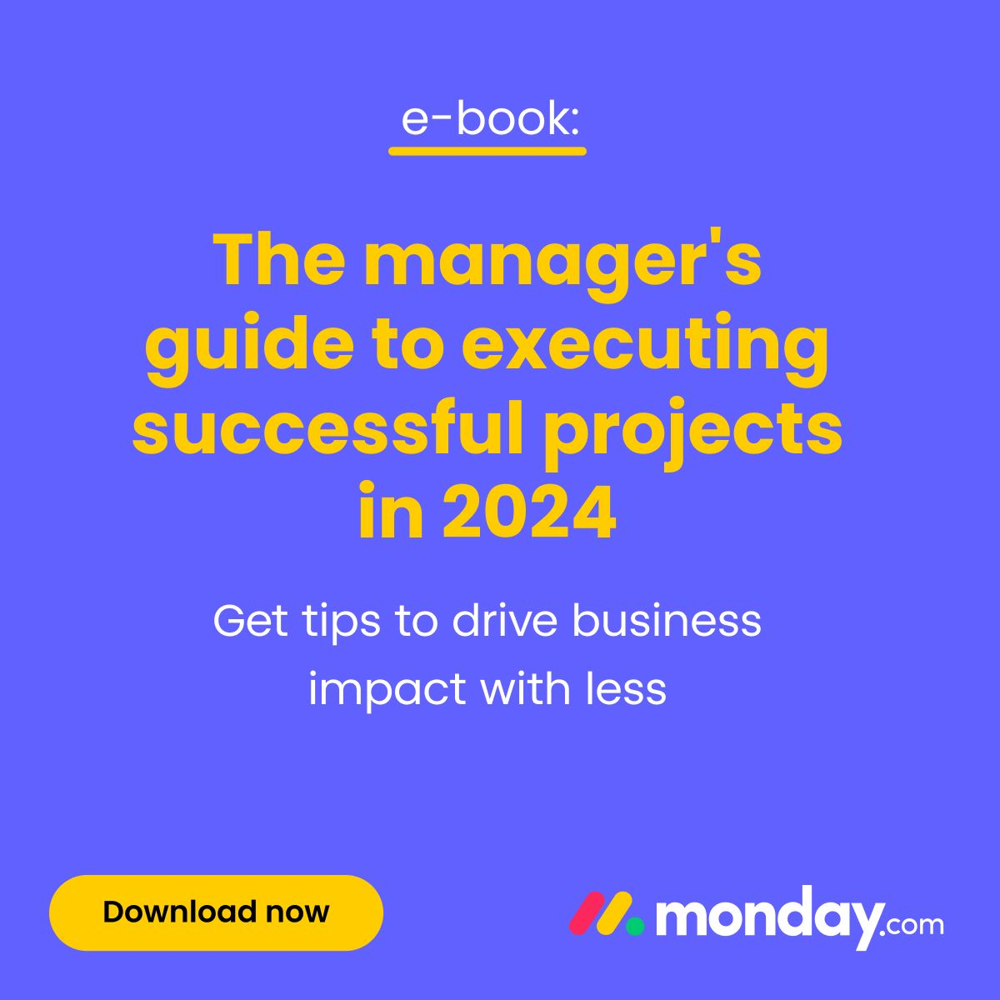
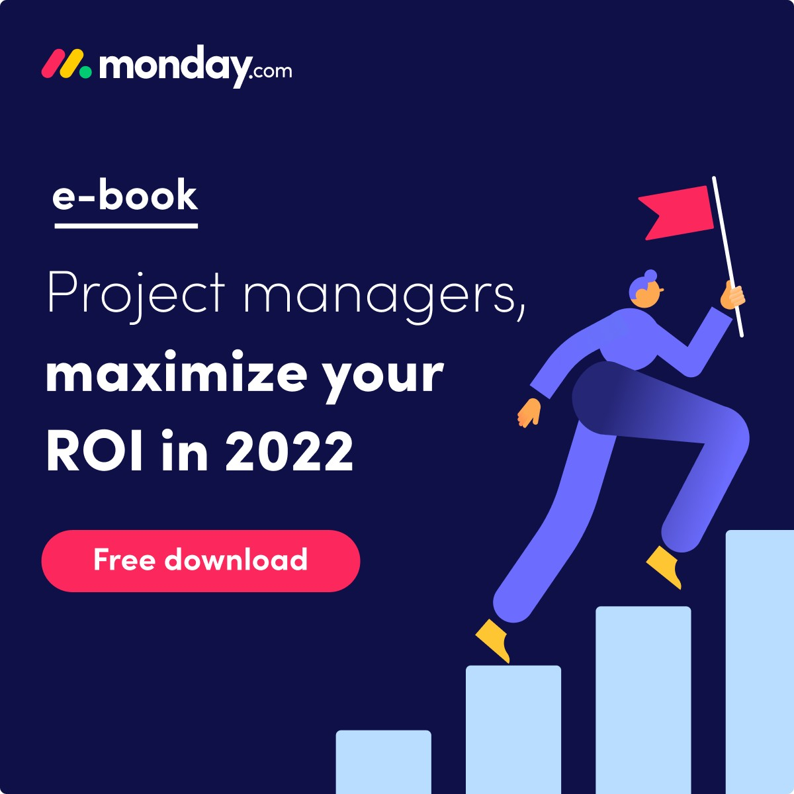
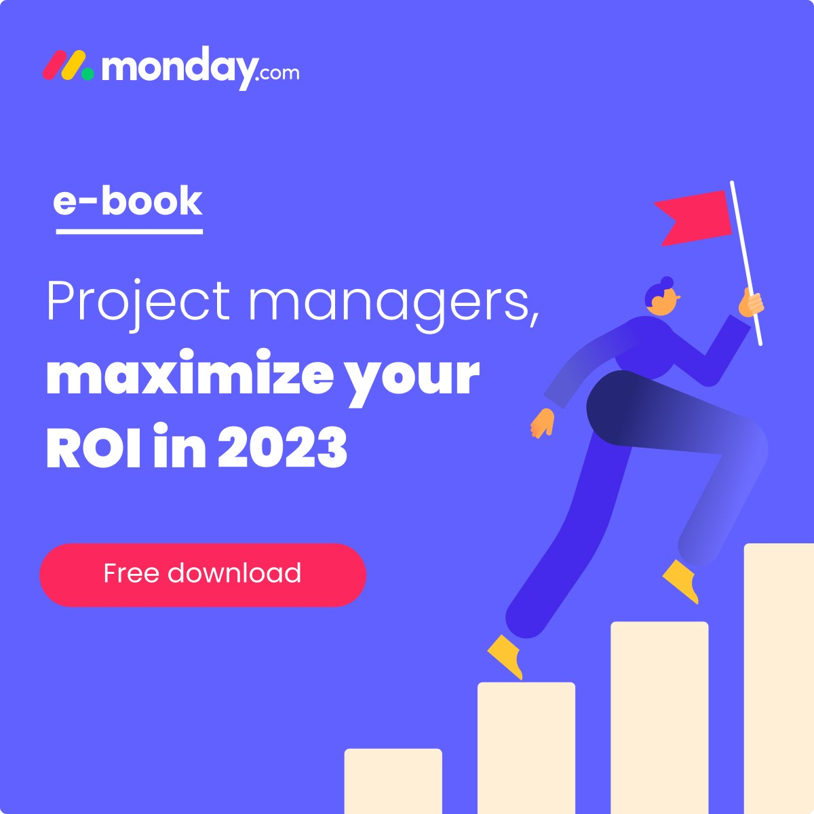
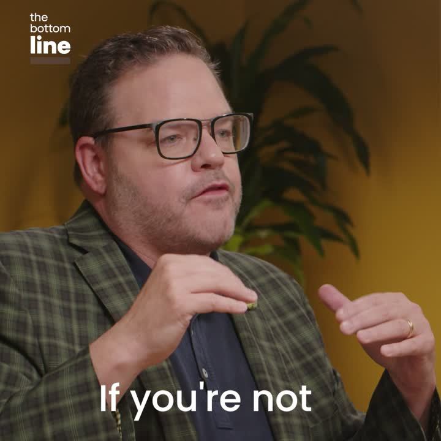
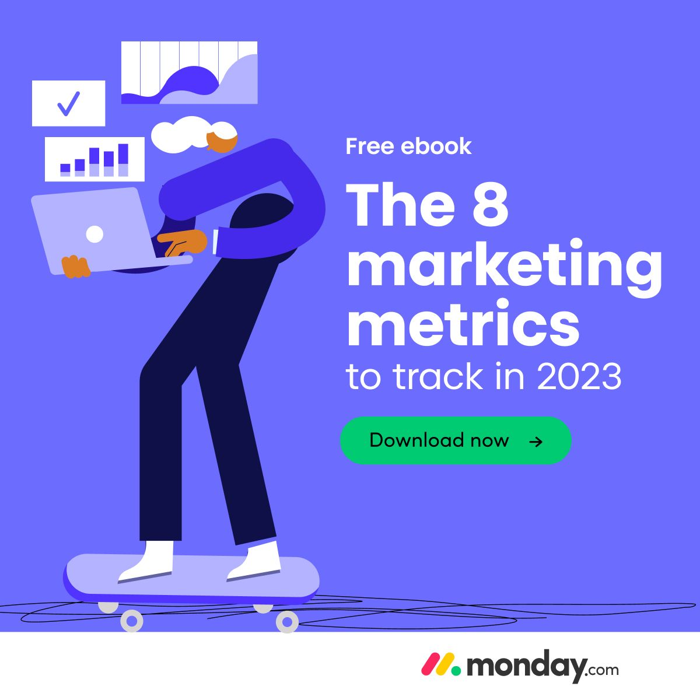
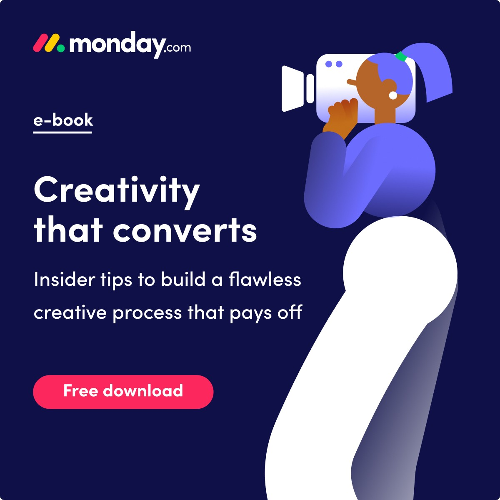
Same lead form setup, but no content offer: a product pitch or a demo request. Lead volume can look OK, but each lead cost 10 to 20 times more and almost nobody who opened the form finished it.
| Offer | Ads | Leads | CPL | Form CVR |
|---|---|---|---|---|
| "From chasing tasks to driving business growth" (ops/marketing product pitch) | 9 | 1,043 | $1,136 | 2% |
| Demo / consultation request | 9 | 508 | $2,061 | 1% |
| Other product pitches, no offer (PMO goals, project video, sales CRM) | 6 | 351 | $1,612 | 1% |
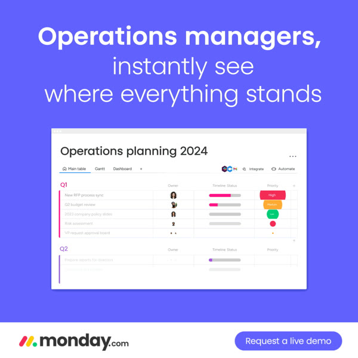
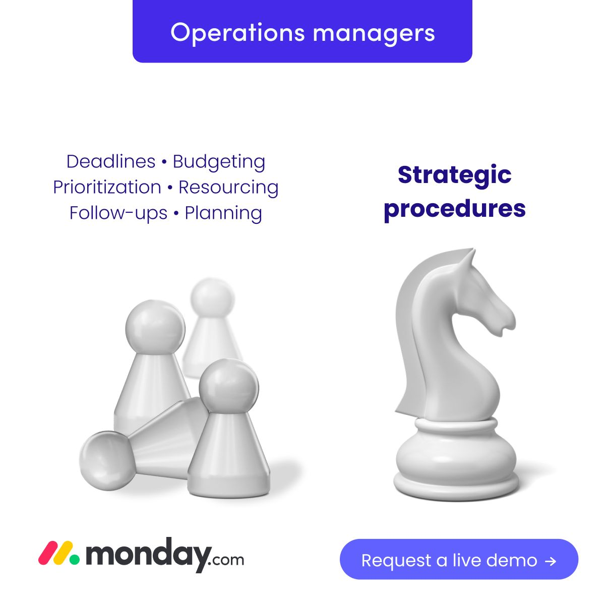
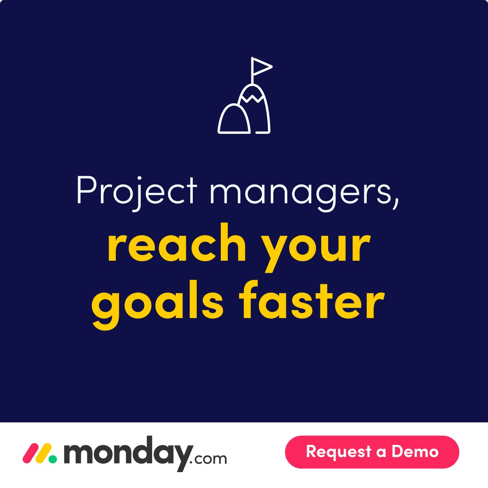
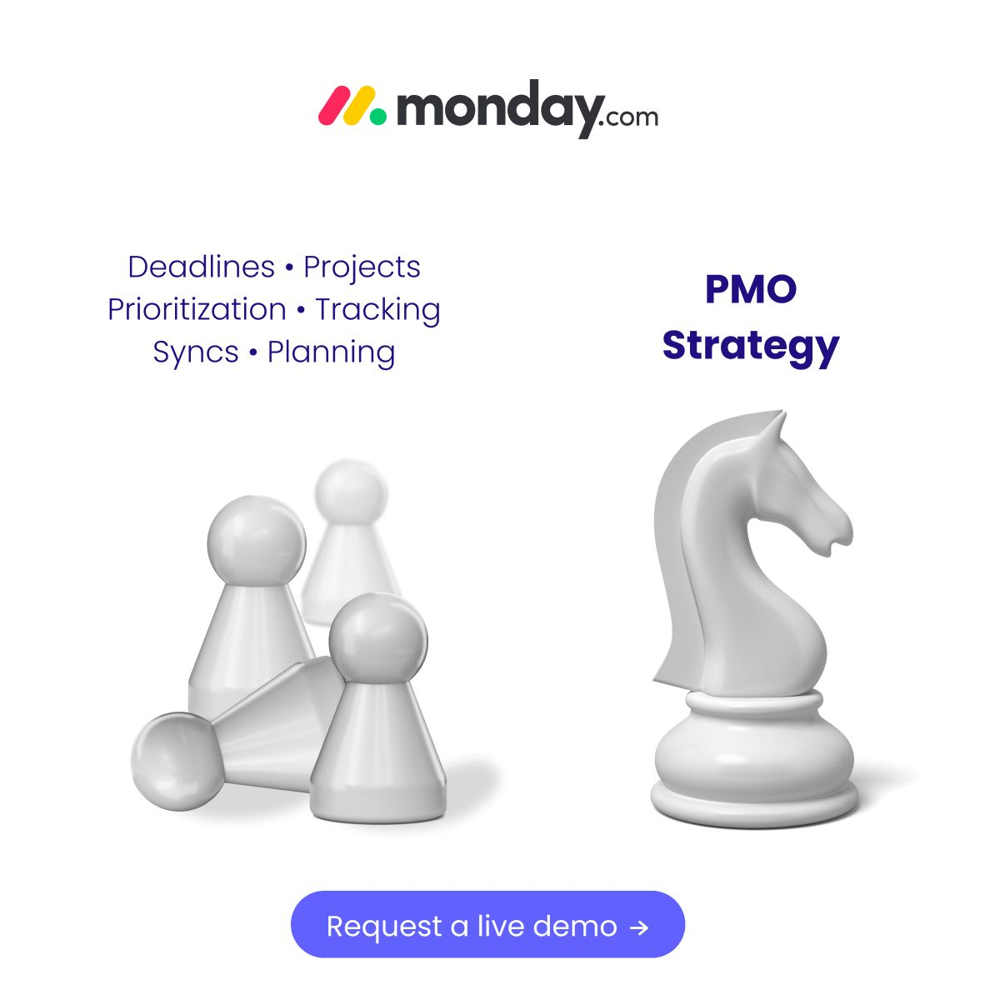
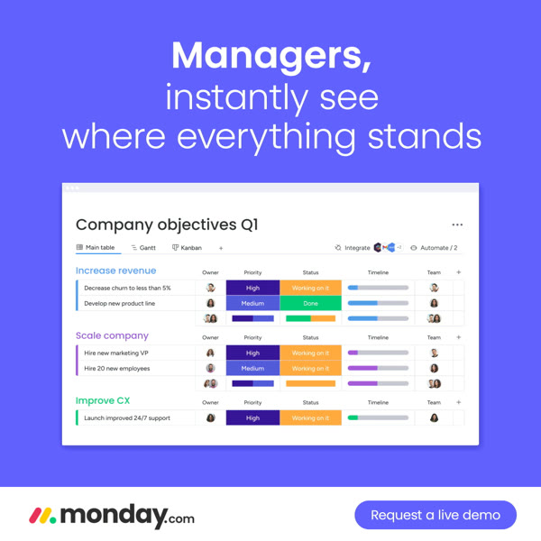
Takeaway for the new test: keep the offer in the headline ("Free eBook: …" / "Free guide: …"), open with a stat or question, and use Download. Demo stays only as the V6 control, judged on lead quality, not CPL.
Prepared for Miri, Agentic Linkedin, Oct 19 2026. Draft for review, nothing uploaded.
Top 70 lead-gen creatives by lead count (oneClickLeads), CPL = spend / leads:
Best single ads:
Winning pattern: question or stat hook in the first line, 'Free eBook:' + clear title in the headline, manager/PM framing, one short benefit line, ✅ bullets only for a 'what's inside' list.
Caveat: these are lead counts only. Lead quality (SQL/CPS) is not in-platform, so the demo control (V6) is there to compare quality, not volume.
Intro text (hook 119 chars, full 452 chars):
Half your week goes to chasing status updates instead of moving projects forward. There's a better way to run delivery.
This free guide shows managers how to replace scattered updates with one clear view of the work:
✅ Set up a single source of truth for every project and request
✅ Cut the status meetings that only exist to share updates
✅ Spot blockers before they turn into missed deadlines
Practical steps you can apply with your team this week.
Ad headline (47): Free guide: Stop chasing project status updates
Intro text (hook 119 chars, full 452 chars):
Your team spends more time asking where things stand than actually launching campaigns. There's a better way to run it.
This free guide shows managers how to replace scattered updates with one clear view of the work:
✅ Set up a single source of truth for every project and request
✅ Cut the status meetings that only exist to share updates
✅ Spot blockers before they turn into missed deadlines
Practical steps you can apply with your team this week.
Ad headline (48): Free guide: Stop chasing campaign status updates
Intro text (hook 120 chars, full 453 chars):
Requests in email, trackers in spreadsheets, updates in chat. Running operations shouldn't mean hunting for information.
This free guide shows managers how to replace scattered updates with one clear view of the work:
✅ Set up a single source of truth for every project and request
✅ Cut the status meetings that only exist to share updates
✅ Spot blockers before they turn into missed deadlines
Practical steps you can apply with your team this week.
Ad headline (48): Free guide: Stop hunting for operational updates
CTA button: Download. Content offer. Historically content forms ran ~14% form CVR vs ~1% for demo forms in this account. 'Download' sets a clear, low-commitment expectation.
Lead form headline (46): Get the guide: one clear view of all your work
Form description (133): A practical guide for managers who want fewer status meetings and fewer surprises. Fill in your details and we'll send it right away.
Thank-you message: Thanks! Your guide is ready. Want to see how teams set this up in monday.com?
Button: Download the guide
Creative direction: Static banner 1200x1200. Split screen: left side a cluttered collage (email, spreadsheet, chat bubbles, 'any update?' notes), right side one clean monday.com board/dashboard. Short overlay: 'From chasing updates to seeing everything.' Guide cover mock in the corner.
Intro text (hook 133 chars, full 379 chars):
[PLACEHOLDER: needs verified stat, e.g. % of projects delivered on time]. Here's what the teams that beat the average do differently.
This guide breaks down the results and the setup behind them:
✅ The workflows that made the biggest difference
✅ How managers track progress without extra meetings
✅ A simple plan to get the same results on your team
No theory. Just the steps.
Ad headline (42): How top PMOs deliver more projects on time
Intro text (hook 123 chars, full 369 chars):
Marketing teams using one shared workspace report [PLACEHOLDER: needs verified stat]. See how they set it up, step by step.
This guide breaks down the results and the setup behind them:
✅ The workflows that made the biggest difference
✅ How managers track progress without extra meetings
✅ A simple plan to get the same results on your team
No theory. Just the steps.
Ad headline (41): How marketing teams ship campaigns faster
Intro text (hook 123 chars, full 369 chars):
Ops teams that standardize intake and approvals report [PLACEHOLDER: needs verified stat]. See the exact workflow they use.
This guide breaks down the results and the setup behind them:
✅ The workflows that made the biggest difference
✅ How managers track progress without extra meetings
✅ A simple plan to get the same results on your team
No theory. Just the steps.
Ad headline (31): How ops teams cut approval time
CTA button: Download. The number creates curiosity, the download delivers the 'how'. Same low-friction CTA as V1 so the test isolates the angle.
Lead form headline (35): Get the playbook behind the results
Form description (112): See the workflows and setup behind the numbers, and a plan to apply them to your own team. Send me the playbook.
Thank-you message: Thanks! Your playbook is on its way. Start with section 1 for the quickest win.
Button: Open the playbook
Creative direction: Static banner. One big number as the hero ([PLACEHOLDER stat]) in monday.com brand font, short label underneath, small product dashboard visual behind it. Nothing else on the image. Never ship with the placeholder.
Intro text (hook 126 chars, full 329 chars):
Free project management templates: project plan, RACI, risk log and status report. Ready to copy and use with your team today.
Inside the kit:
✅ 4 templates built for managers, not admins
✅ A short guide on when to use each one
✅ Examples of how other teams adapt them
Use them in any tool, or open them straight in monday.com.
Ad headline (40): Free kit: 4 project management templates
Intro text (hook 127 chars, full 330 chars):
Free marketing templates: campaign brief, content calendar, launch checklist and KPI report. Ready to use with your team today.
Inside the kit:
✅ 4 templates built for managers, not admins
✅ A short guide on when to use each one
✅ Examples of how other teams adapt them
Use them in any tool, or open them straight in monday.com.
Ad headline (40): Free kit: 4 marketing planning templates
Intro text (hook 129 chars, full 332 chars):
Free operations templates: request intake, approval flow, SOP checklist and weekly ops report. Ready to use with your team today.
Inside the kit:
✅ 4 templates built for managers, not admins
✅ A short guide on when to use each one
✅ Examples of how other teams adapt them
Use them in any tool, or open them straight in monday.com.
Ad headline (41): Free kit: 4 operations workflow templates
CTA button: Download. The offer is a tangible file, so 'Download' is the literal promise. Matches the eBook winners (CPL $37-$215).
Lead form headline (26): Get your free template kit
Form description (126): 4 ready-to-use templates plus a short guide on how to use them. Built for managers who want to set things up once and move on.
Thank-you message: Your template kit is ready. Tip: start with the one you'd use this week.
Button: Download the kit
Creative direction: Document ad (preview first 2-3 pages, rest gated behind the form) OR static banner showing a fanned stack of 4 template thumbnails with labels. Document ad recommended: lets the user see real value before giving details.
Intro text (hook 122 chars, full 340 chars):
How do PMOs really run in 2027? We looked at [PLACEHOLDER: needs verified data source/sample]. See where your team stands.
The report covers:
✅ Where teams are investing time and budget next year
✅ The biggest gaps between high- and low-performing teams
✅ A quick checklist to benchmark your own team
Short, visual and built for managers.
Ad headline (41): 2027 benchmark: How PMOs plan and deliver
Intro text (hook 120 chars, full 338 chars):
How are marketing teams using AI and automation in 2027? [PLACEHOLDER: needs verified data source]. See where you stand.
The report covers:
✅ Where teams are investing time and budget next year
✅ The biggest gaps between high- and low-performing teams
✅ A quick checklist to benchmark your own team
Short, visual and built for managers.
Ad headline (40): 2027 benchmark: How marketing teams work
Intro text (hook 115 chars, full 333 chars):
Where do operations teams lose the most time in 2027? [PLACEHOLDER: needs verified data source]. Compare your team.
The report covers:
✅ Where teams are investing time and budget next year
✅ The biggest gaps between high- and low-performing teams
✅ A quick checklist to benchmark your own team
Short, visual and built for managers.
Ad headline (33): 2027 benchmark: How ops teams run
CTA button: Unlock full document. Native fit for a document ad: user reads the preview, then unlocks the rest via the form. Benchmark curiosity is strongest mid-read.
Lead form headline (37): Unlock the full 2027 benchmark report
Form description (98): Get the full report, including the benchmark checklist for your own team. Takes 5 minutes to read.
Thank-you message: Thanks! The full report is unlocked. Jump to the checklist on the last page to benchmark your team.
Button: Read the full report
Creative direction: Document ad, 6-10 pages, first 2 pages open (cover + 1 strong chart). Clean data-viz style, one chart per page. Needs a real data source before launch (survey or monday.com aggregated data, cleared by PMM/legal).
Intro text (hook 124 chars, full 382 chars):
See how [PLACEHOLDER: verified customer name] runs its PMO on monday.com, and what changed for the team in the first months.
In this short case study:
✅ The problem they started with
✅ How they set up their workflows
✅ The results: [PLACEHOLDER: needs verified customer result]
Join [PLACEHOLDER: verify current customer count, e.g. 225K+] customers who manage work on monday.com.
Ad headline (41): How [Customer] runs its PMO on monday.com
Intro text (hook 106 chars, full 364 chars):
See how [PLACEHOLDER: verified customer name]'s marketing team plans and launches campaigns on monday.com.
In this short case study:
✅ The problem they started with
✅ How they set up their workflows
✅ The results: [PLACEHOLDER: needs verified customer result]
Join [PLACEHOLDER: verify current customer count, e.g. 225K+] customers who manage work on monday.com.
Ad headline (43): How [Customer] runs marketing on monday.com
Intro text (hook 113 chars, full 371 chars):
See how [PLACEHOLDER: verified customer name] streamlined its operations on monday.com, from intake to reporting.
In this short case study:
✅ The problem they started with
✅ How they set up their workflows
✅ The results: [PLACEHOLDER: needs verified customer result]
Join [PLACEHOLDER: verify current customer count, e.g. 225K+] customers who manage work on monday.com.
Ad headline (44): How [Customer] runs operations on monday.com
CTA button: Learn more. A case study is proof, not a deliverable to 'download'. 'Learn more' is softer and fits a story format.
Lead form headline (23): Get the full case study
Form description (92): See the setup, the workflows and the results, and how you could apply them to your own team.
Thank-you message: Thanks! Here's the full story. Want to see a similar setup for your team?
Button: Read the case study
Creative direction: Static banner with customer logo (only with written approval) + one-line quote from a named customer + their result. Alternative: 15-20s video, customer quote on screen over product footage.
Intro text (hook 121 chars, full 327 chars):
See how monday.com would work for your PMO. A 30-minute session with an expert, built around your projects and your team.
In the session we'll:
✅ Map one of your real workflows on monday.com
✅ Show the dashboards managers use to track it
✅ Answer your questions on setup, security and rollout
No generic pitch. Your use case.
Ad headline (40): Get a monday.com demo built for your PMO
Intro text (hook 119 chars, full 325 chars):
See how monday.com would work for your marketing team. A 30-minute session with an expert, built around your workflows.
In the session we'll:
✅ Map one of your real workflows on monday.com
✅ Show the dashboards managers use to track it
✅ Answer your questions on setup, security and rollout
No generic pitch. Your use case.
Ad headline (41): Get a monday.com demo built for marketing
Intro text (hook 115 chars, full 321 chars):
See how monday.com would work for your operations. A 30-minute session with an expert, built around your processes.
In the session we'll:
✅ Map one of your real workflows on monday.com
✅ Show the dashboards managers use to track it
✅ Answer your questions on setup, security and rollout
No generic pitch. Your use case.
Ad headline (35): Get a monday.com demo built for ops
CTA button: Request demo. Honest intent signal for the quality comparison. Expect much higher CPL (past demo forms: ~$2,200 CPL, ~1% form CVR), so keep budget small and judge on CPS/SQL, not CPL.
Lead form headline (38): Book your 30-minute monday.com session
Form description (115): Tell us a bit about your team and we'll tailor the session to your workflows. An expert will reach out to schedule.
Thank-you message: Thanks! A monday.com expert will contact you within [PLACEHOLDER: SLA] to schedule.
Button: Explore monday.com
Creative direction: Static banner: real product screenshot (dashboard for the relevant function) with a small 'Live session with an expert' tag. No stock photos.